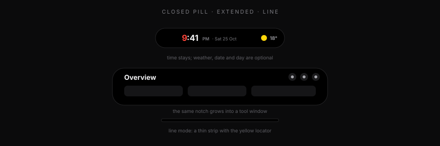
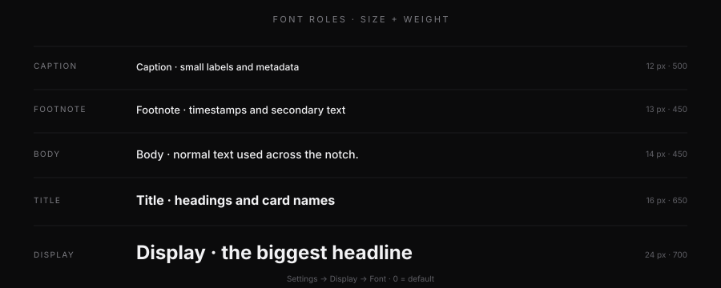
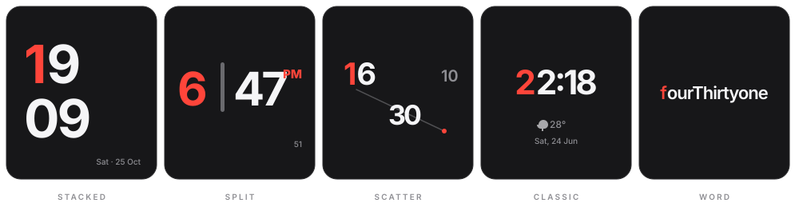
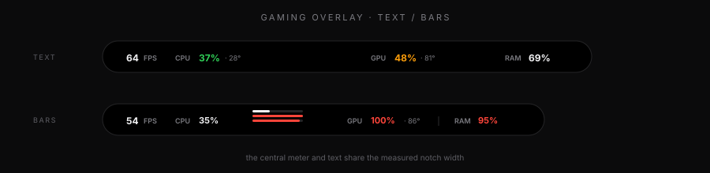

The Windows dynamic island. Media, lyrics, tools and privacy that stay out of the way.
Start here
WinZal lives at the top edge of the screen. It is a thin line or a small pill when idle, and becomes a tool window when you need it. Nothing opens on its own unless you enable it.
Wake the pill. Move away and it closes again.
Open the active tool. Click outside or press Esc to close.
Ctrl Alt Space opens and closes it from anywhere.
Anatomy
The closed pill shows time first. Weather, date and day are optional. The extended view is the same shape grown into the current tool. Line mode is a thin strip with a yellow locator dot, so you can always find it.

Time, media, lyrics, weather or gaming stats, depending on what is active. The black pill is measured from the live row plus 12 px per side and grows or shrinks to fit; Extra width at 0 auto-fits, and clock faces or stat toggles never clip at the edges.
Header, the active tool and the dock. Settings is the gear at the end.
A minimal strip for a clean desktop. The amber dot marks the notch position.
Settings → Notch → Closed pill. Text size is 10–24 px and the weight slider sits below it. Both preview live with time, period, date and temperature.
Settings → Music → Songtext. Separate preview, text size/weight, min width, pill length, auto width on by default and height. The pill eases in and out when it grows or shrinks. Instrumental tracks say Instrumental; no lyrics say Music.
Header icons
Tools
Enable, disable and reorder tools in Settings → Tools. The dock only shows what you keep.
Clock, weather, quick tiles, power mode and system status. First launch opens here.
Artwork, title, artist, seek, transport, output mixer, volume and synced lyrics.
Countdown, alarm and a live activity that opens the notch when time is up.
Fast local checklist. Stored on this PC.
Plain notes with instant save. No account, no sync.
Text, links and images from the clipboard. Redacted in Presentation mode.
Drop files for a quick temporary shelf. Drag them back out anywhere.
Local AI chat with Gemini, Groq or your own OpenAI-compatible endpoint; history stays on this PC.
One custom JSON endpoint. Name it, point it at a number and watch the usage bar.
Current conditions, hourly and daily forecast, automatic or fixed location.
CPU, GPU, RAM, temperatures, ping and one minute of history.
Voice call, participants, mute states and Rich Presence from the local Discord app.
Passwords and 2FA codes, encrypted locally. PIN or Windows Hello.
Gear in the dock. Changes apply immediately and stay on this PC.
Settings map
Display → Font
Five roles, one shared scale. Pick a role, then adjust its size and weight. Every value is an offset: 0 = the built-in default. If you experiment too far, press Reset font and every role returns to 0.

−4 to +8 px, in 0.5 px steps. Line height follows the size.
−300 to +300, in 50 steps. Inter is variable, so 450 or 650 are real weights.
Preview: the selected role is shown above the sliders with its current pixel size and weight. The five role cards use the real text-role classes, so they update live too.
Settings → Notch → Clock faces
Five faces live in Settings → Notch → Clock faces. Classic is the default and matches the previous clock. The expanded Overview and the closed pill both use the selected face. Split also shows live seconds and reveals a Splitter height slider under the picker.

Two-line hour-and-minute block, or a large hour and minute separated by an adjustable vertical bar, with live seconds and the period at the side.
Scatter spreads hour, minute and second around a thin diagonal line; Word writes the time out, like fourThirtyone.
Performance → Gaming look
The preview above the toggles is the real thing: turn a stat off and the pill shrinks to fit. Choose Text or Bars, add an optional divider between the left and right groups, or drop everything except FPS and CPU for a minimal overlay. Bars puts a stacked CPU/GPU/RAM meter in the middle.

FPS, CPU, Temperatures, GPU and RAM. Each toggle updates the preview and the real pill.
The pill measures the real row, so removing items or dropping digits shrinks the notch instead of leaving a fixed gap.
Uses the existing Glass 0.62 alpha while a game is in front. One transparency source, no duplicate slider.
Privacy
Hides clipboard previews and the vault; copying redacted cards is blocked. Auto-detects Windows Graphics Capture apps and OBS, and can be toggled by hand. Discord’s DXGI share may need the manual eye.
Ghosts the whole notch to 28% and makes it click-through. Hover is suppressed too. Triple-click over its area, use CtrlAltS, or the tray to wake it.
Performance
0–100% slider. 0 is off, mid is reduced, 100 is full. Hover the preview to see the selected intensity animate.
CPU mode is software and lowest RAM. GPU mode uses the integrated GPU; Auto/iGPU/dGPU picks the adapter. Changing it restarts WinZal.
One-time elevated helper. Stays active after restarts and exposes FPS, CPU temperature and Lenovo fan modes.
Idle memory is roughly 10 MB for the UI and 20 MB for the helper; the WebView2 engine adds its own shared processes. The notch trims its working set while closed.
Music & lyrics
Lyrics come from LRCLIB and are cached per track. If LRCLIB has no word timings, lrc.red is tried as a free word/line-sync fallback; it is credited in Settings → Music. Word by Word (default) and Apple Music, which springs the whole line in while the next line stays dim, plus seven effects: Word fill sweep, Glitch scramble, Liquid fill, Spotlight, Spark, Orbit and Ambient. Lines change on the timestamp with a short crossfade. When LRCLIB has word-level timings, those exact word starts drive the highlight; line-only records use a character-weighted estimate. Tracks without synced lyrics show the real media/video title.
Text size 10–15, weight 400–900, min width and pill length 284–640, height 24–44. Auto width is on by default: grow and shrink with the line, never below the minimum or beyond the length.
Instrumental tracks show Instrumental. Tracks with no synced lyrics show Music instead of an empty slot.
±1 s in 0.1 s steps. Positive values make lines appear later. Fixes early or late LRCLIB timings.
Three equalizers: Bars, Mirror and Ticks. Four behind-glows: Wave, Aurora, Bokeh and Leaves (plus None). Wave is a moving ocean swell with a translucent fill below the crest; Aurora is two soft accent curtains. Both follow the Equalization Accent. The visualization stays in the closed pill; the expanded Now Playing panel has no background layer, which keeps memory use down.
The Now Playing mixer lists Windows playback endpoints. Pick speakers, headphones or Bluetooth and Windows switches its default output immediately.
Keyboard
Troubleshooting
It may be in Silent mode. Triple-click where it sits, press CtrlAltS, or use the tray → Silent mode.
Another app may own the key. The tray menu and the header buttons still work.
Open Settings → Performance → FPS unlock once. After the prompt and a sign-in it stays active.
The build is unsigned. Choose More info → Run anyway. Updates are signed separately.
The notch hides itself while the Windows Hello secure prompt is open, then returns. Focus and PIN keys go to the prompt.
Settings → Display → Font → Reset font. Appearance and Notch also have their own reset buttons.